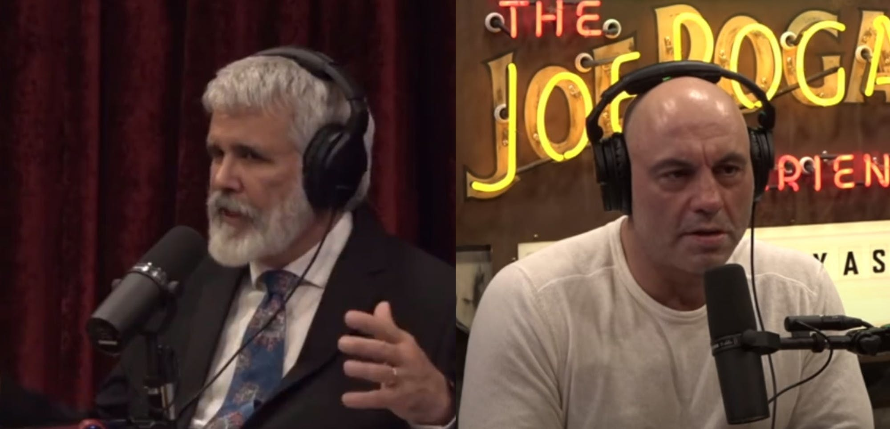

Youtube in so censored that it's hard to get a complete picture on Covid.

Recently, clips of a Joe Rogan Podcast with Dr. Robert Malone got a bit too wacky for youtube.
This leads me to use BitChute for unncensored videos that could be deemed medical misinformation.
Meanwhile there is a Lex Fridman Podcast on youtube with Jay Bhattacharya from The Great Barrington Declaration, which is when 3 top professors did a quick study and denounced the impending lockdowns.
Personally I think the Joe Rogan Experience is closer to the truth and the Lex Fridman podcast is much more measured. To me they just aren't putting two and two together. It's like Dr Robert said, either it's incompetance, or malevolence.
Before I get into my philosophy on tyranny I want to briefly discuss Joe Rogan.
Joe Rogan is a fascinating figure to a conspriacy theorist because we often wonder if he is one of us. He started out as one, and has friends that are, he even had a show about it called Joe Rogan Questions Everything. But then you had a 100 Million Dollar deal with Spotify, and we wondered if he would become some sort of shill.
Instead, he's having people on that are getting him demonized by the media, and he's exposing all kinds of corruption with regards to this whole thing.
I personally think Joe Rogan is on our side, and he is delicately educating the public about the crazy corruption in our world government.
At the end of the day, I resonate the most with Christians. I love a good Christian just sharing their dreams about Jesus and sharing the Gospel. I honestly think that's the good stuff. So believe whatever you want of course, I respect freedom. But the cool thing about Jesus is he argues that you're a slave to sin without him already so you might as well just join the God side.
On Fear
On Bit Chute there are videos that induce fear. Some of them argue that the vaccinated can be a risk to the unvaccinated by shedding the spike protein.
I don't subscribe to this belief because I think it's a step in the wrong direction. When I think about what all this is really about it's about diving people, literally isolating them.
I have a dream that one day people will be judged not by their vaccination status but rather by the content of their character.
The best cure to this disease of tyranny is for us locally as communities to come together and all take off our masks and hold hands! Maybe that's a little extreme but still. Unity. Peace. Love. Gratitude. Hope.
Furthermore, I feel the same way about racism. I believe in the philosophy of Dr. Martin Luther King, Jr. when he said I have a dream that one day people will be judged not by the color of their skin but by the content of their character. What hes saying is, it doesn't matter where you come from. What matters is what you do with your life and how you behave. Give people a chance to distinguish themselves by their indivual character. Instead today, you have blatant counter-racism against white people with slogans like "white privelidge" and "black lives matter".
The problem with Black Lives Matter is the name itself. It directly defies Martin Luther King Jr's message. It's Martin Luther King Jr's Nightmare. Black lives Matter is Martin Luther King Jr's Nightmare, because it draws attention to color and he simply wanted us colorblind. It's really that simple. All you have to do is stop talking about peoples color and race and start talking about individual's character.
Obviously I oppose the lockdowns, and I oppose mandated vaccinations, especially in children. But I'm willing to meet people half way on what we can agree on.
When most people can agree on something, like not forcing children to get vaccinated to go to school, and they do it anyway, you have to wonder what's really going on.
If we are truly in a free democratic society, wouldn't we simply elect the man or woman who promised to stay out of our businesses and schools and promised not to forcibly inject our children?
One of the important things to understand about the Joe Rogan controversial episode is that he explains the Trusted News Initiative. In the book 1984 it is the Ministry of Truth that deliberately falsifies information for the public. These name games exist in our world currently. The Trusted News Initiative was created to combat the bullshit claims that Russia hijacked our election. So by creating a problem and then offering a solution, the government created a new branch of itself that monitors the news to "ensure our democratic process isn't interferred with by false information online" or something like that. But then, once that blows over and you have this department, you can repurpose it for the next crisis with Covid misinformation online. So now we have the Government just blatantly policing online social networks in concert with Big Tech and Big Pharma.
Conqueror in the Age of Robots
If there's one thing worthy to be afraid of it's freedom being lost forever. Freedom survives, and one of the reasons it's tricky to rule over people is that you need to use people to rule over people. So as a Napoleon-type conqueror, you need to have enough of the population within your inner circle and army. You need to keep them well off enough that they are willing to help you rule over the slaves.
If you treat the slaves too harshly, the soldiers may not follow your commands. They may develop minds of their own and form a coup.
The solution is robots.
If you are a Conquerer in the age of the dawn of Robots, there is an outcome you could pursue where the entire rest of the world is policed by robot police under your sole control. You would then be King of the World and King of the Robots.
Once they don't need us, I mean REALLY don't need us, for anything. We might be toast. I'm just saying.
There's a million ways this could go with robots or AI but one way worth pursuing as a conqueror would be the enslavement or extermination of the masses.
It's just scary to think about a Robot who is executing orders from above that a human being would resist.
I'm gonna choose love, and not be afraid. I love freedom, and although at times I feel like Winston Smith writing in my alcove, I'm really just a guy writing on his laptop.
1.6.22
2022 Disclaimer
This was orignally designed as a one year project to work on my coding skills.
Then I began blogging to fill up the /blog page of the website.
I had deleted my Facebook but still enjoyed sharing links so the blog was a good place to do that.
Many of the ideas of my blog are experimental and do not accurately reflect my current beliefs.
My beliefs have a right to evolve and I also would like to play Devil's advocate with the devil being the conspiracy theorist.
Many of the links I've shared have since been removed from youtube.
Many of the words I have written have been seared with anger and do not reflect my current state of mind after writing them.
I intend to edit my past year's blog, rather than continue blogging, to focus more on presentation than content. Now that the song is written, it's time to record.
My annotations will be styled like this -1.3.22
I write my blog in the name of freedom and liberty and I repect your individual liberty to do what you want and think how you want.
1.3.22
I like this new channel I found on bitchute because it's christian but real at the same time. Alien Wars. This guy believes in Jesus I can tell.
1.3.22
I like this guy's angle. He reminds me of Jonathan Adampants.
I don't necessarily agree with anything he says but I think he makes some good points otherwise I wouldn't be posting him.
1.4.22
Just love this song right now
1.5.22
Federal Reserve is Private
Bill Cooper talks about the illegitimacy of the Federal Reserve.
As you can see, the video has been removed. -1.3.22
01/31/21
Proof that 911 was an inside job
01/30/21
Explosives expert explains how to made a building implode. (Hint, it's not by flying a jet into the top.)
I recently rewatched this video and it is disturbing. I don't fully adhere to the controlled demolition theory as I think anything is possible but I prefer the "no planes" theory which implies the buildings were destroyed by other means than simply planes. This best explains why tower 7 fell without contacting a plane. I think this video is a good start to understanding that the official story is potentially a cover-up.
9/11 is old news but the people who studied 9/11 are more likely to not fall for the covid 19 vaccine campaign, whether it is harmful or not. The benefit of thinking 9.11 is an inside job is that you do not take on unneccessary side effects from a vax because you don't trust them. This same benefit is also a detriment if you believe that 9.11 was not an inside job and the vaccine is safe, because then the person studying 9/11 is wasting their time and they miss out on the benefits of the vaccine. Nevertheless, 9/11 Truthers are much more likely to be skeptical of the current covid-19 crisis, and that is why I think 9.11 is important to understand.-1/5.22
Save the Children
01/30/21
This guy talks about hollywood pedophilia and how to stop it.
This was a great video unfortunately it's been removed but it's from a filmmaker who's face I still remember and he was accusing hollywood of pedophilia. I could try to track it down but haven't gotten around to it yet. -1.5.22
Reality
01.5.22
I think he's hilarious and insightful. He talks about the bullshit airbag recalls. I remember mine causing me great distress and its funny to think about them doing it just to scare people or also to potentially outfit the car with some sort of chip.
I decided to replace my old post with his latest video -1.5.22
Beast System
01/27/21
This was the first video where I heard Jonathan Adampants. Later on I decided I wanted to hear more and discovered his full videos. This is just a provacative montage. This video is no longer allowed on youtube, so you know it's good. Enjoy.
Adampants is still my favorite voice -1.5.22
Dystopia
01/22/21
Thank you, Russell Brand. My first impression of Russell Brand was when he was Aldus Snow in Forgetting Sarah Marshall. He made that movie and was an instant sensation. Then I started to see the real Russell Brand talking on youtube. I found him to be pretentious, but I think now he's gotten a lot better at his delivery. I think he's not just some actor spouting philsophy, he's actually gotten a lot of practice delving into complicated ideas that I think he's quite good now.
It's like a breath of fresh air to hear someone prominent talk about the dangers we're facing.
I actually do not like Russell Brands channel anymore and am not sure on how much he is actually helping -1.5.22
Guidelines
01/20/21
I can't go to the movies.
There is a sign posted outside the local movie theater.
It says, "We are closed until local and state government guidelines allow us to reopen."
Translation: this private company would like to be open, but your governor has forbid us to be open. He has taken away your right to go to the movies, and our right to provide them to you.
Guidelines. They call them guidelines. They are not. They are dictates. They are unlawful. They are an infringement on our rights.
Now I went to the theater and saw Tenet the moment it opened. There were ridiculous rules like wearing mask at all times and having employees get you drinks in a separate section, but it was still enjoyable, to be free. Even that wasn't good enough for them. They had to shut it down for what? For my safety? Or for total control of what the population can or cannot do with their free will?
It is disgusting that these governors can prevent us from going to the movies in the name of public safety. It's a joke. It's a scam. It's a lie. If they care about health then why are we able to buy alcohol and tobacco?
They only care about control. Dominion.
I still support this post and made no edits -1.5.22